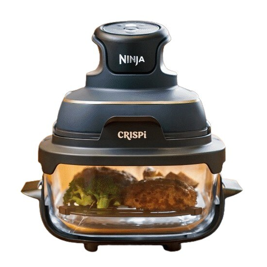
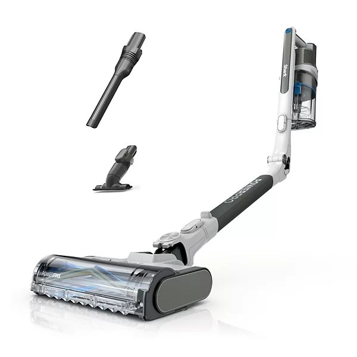
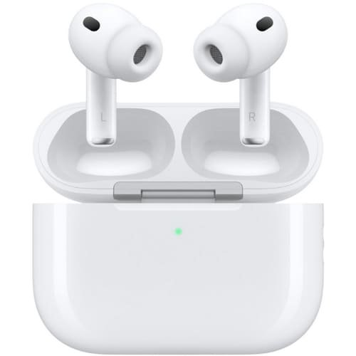
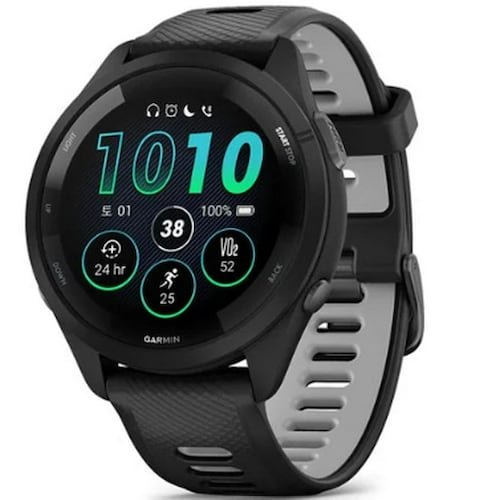
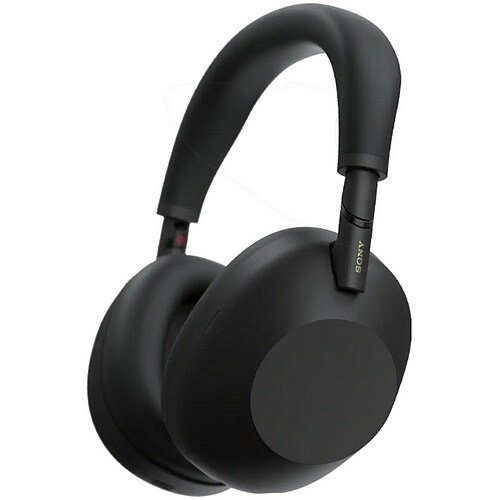
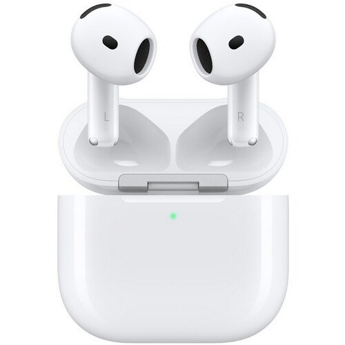

+11.5%
Avg. price, small kitchen appliances in China
Fewer units, higher prices
Prices rose even as unit sales fell 14.6%. On Korean TV shopping, Roborock hit KRW 45B and Dyson hair KRW 30B.
신랑과기뉴스와이어(GS리테일)Gajeon Radar
Gajeon Radar (가전레이더) tracks appliance news and launches across Korea, the US, Japan, China and Europe, and picks AI and small appliances from Danawa popularity ranks and reviews — every morning at 7 AM KST, with a source and date on every number.
All 16 Samsung × Gentle Monster AI glasses sold out before launch. Meanwhile China's appliance retail fell 10.1% in Q3. New devices run hot; big appliances lean on discounts.
Prices rose even as unit sales fell 14.6%. On Korean TV shopping, Roborock hit KRW 45B and Dyson hair KRW 30B.
신랑과기뉴스와이어(GS리테일)From Ninja Crispi to Ainic all-stainless, 'see-through cooking' is the trend.
@DIME@DIMEDanawaSamsung Family Hub now runs Gemini; LG set up a robotics business center.
환구망CEO스코어데일리디지털데일리61% female, rising inflow from people in their 20s. Searches for 'mini air cooler' hit a record.
리스닝마인드·디아이투데이아이보스Danawa's No.1 and No.2 electric heaters are both from the same line.
헤럴드코리아Danawa96% are display-less models. Samsung and Google launch in Korea on December 10.
Android AuthorityCEO스코어데일리Rules: top 5 in the Danawa category · 100+ reviews · rating 4.7+ · AI features stated by the maker

MD · Danawa's No.2 refrigerator, an AI model. Measure for its 914mm width first.
Danawa's No.2 refrigerator. 870L 4-door with an AI saving mode that learns usage patterns to set temperatures, energy grade 1.
Danawa refrigerators, No.2 · reviews 945 · rating 4.8

MD · Its strength is recognizing objects and clear liquids. For the auto water-drain model (VR90F01SAG), check your installation conditions first.
An AI robot vacuum whose camera recognizes objects and even clear liquids; 763 reviews.
Danawa robot vacuums, No.2 · CES 2026 AI features · reviews 763 · rating 4.7

MD · Kimjang season is on now. Check the 835mm width and the 8 included kimchi containers first.
No.4 kimchi refrigerator in kimjang season. 491L 4-door, store-bought kimchi scan storage, multi-purpose custom storage, energy grade 1.
Danawa kimchi refrigerators (stand), No.4 · kimchi-making season · reviews 464 · rating 4.9

MD · The steam-sterilizing station is the differentiator. Climbing up to 8.8cm helps in homes with many thresholds.
36,000Pa suction, AI object recognition with camera and 3D sensing, steam-sterilizing mop station.
Danawa robot vacuums, No.5 · new in October · reviews 499 · rating 4.8
[Ad] "Buy on Coupang" links are part of the Coupang Partners program; we may earn a commission. Coupang ships within Korea.

Danawa's No.1 electric heater. The same line is No.2 (999+ reviews), KRW 26B cumulative.
Danawa electric heaters, No.1 · reviews 839 · rating 4.8
For Studio and single households, design-conscious 20s–30s, pet owners
Edge Retro TV-like cube design, reflector heater

Danawa's No.1 humidifier. Online humidifier purchases peak in early November.
Danawa humidifiers, No.1 · reviews 69 · rating 4.7
For Families with infants, hygiene-minded 30s–40s
Edge Humidifier from Zojirushi's STAN design line, premium price

No.4 right after Dyson at No.2 and No.3 — the KRW 60,000 alternative.
Danawa hair dryers, No.4 · reviews 535 · rating 4.8
For Women in their 20s–30s wanting a high-speed dryer, gift buyers
Edge High-speed dryer at around KRW 60,000, high rating

Danawa's No.1 AI recorder; 999+ reviews and a 4.82 rating on the official store.
Danawa AI recorders, No.1 · reviews 999+ · rating 4.82
For Office workers with many meetings, lectures and calls; reporters and sales reps
Edge Card-type · 4 mics · 5m pickup · transcription & summaries in 112 languages

Danawa's No.2 AI recorder; 999+ reviews and a 4.77 rating on the official store.
Danawa AI recorders, No.2 · reviews 999+ · rating 4.77
For Solo business owners and students who record on the go
Edge Capsule wearable · physical button · 17.5g

No.1 robot vacuum at about a third of the No.2's price.
Danawa robot vacuums, No.1 · reviews 999+ · rating 4.9
For Dual-income families in their 30s–40s wanting a value all-in-one
Edge The only top-ranked model at around KRW 500,000

A steady seller with 934 reviews and an all-stainless interior.
Danawa air fryers, No.3 · reviews 934 · rating 4.6
For 40s–50s worried about peeling coatings, hygiene-minded homes
Edge All-stainless interior at around KRW 80,000

Danawa's No.1 AI smart glasses. Meta has 94% of display-less AI glasses shipments.
Danawa AI smart glasses, No.1 · reviews 1 · rating —
For Early adopters, 20s–40s who shoot lots of photos and video
Edge Meta AI · 2 speakers · 6 mics · 32GB
No.4 kimchi refrigerator in kimjang season. 491L 4-door, store-bought kimchi scan storage, multi-purpose custom storage, energy grade 1.
Danawa kimchi refrigerators (stand), No.4 · kimchi-making season · reviews 464 · rating 4.9
For 3–4 person households that make kimchi, homes replacing a kimchi fridge for a wedding or move
Edge 491L 4-door 4-room · kimchi scan storage · multi-purpose storage · energy grade 1
Danawa's No.2 refrigerator. 870L 4-door with an AI saving mode that learns usage patterns to set temperatures, energy grade 1.
Danawa refrigerators, No.2 · reviews 945 · rating 4.8
For Newlyweds and movers, 4-person households upgrading to large capacity
Edge 870L 4-door · AI saving modes · UV clean+ · energy grade 1
36,000Pa suction, AI object recognition with camera and 3D sensing, steam-sterilizing mop station.
Danawa robot vacuums, No.5 · new in October · reviews 499 · rating 4.8
For Homes with pets or infants, premium robot vacuum upgraders
Edge AI object recognition · steam mop sterilization · hot-water wash & warm-air dry · 4.5cm (max 8.8cm) thresholds

Listed in April, already 396 reviews and a 4.9 rating.
Danawa air fryers, No.6 · reviews 396 · rating 4.9
For 3–4 person households needing capacity, value buyers
Edge 9L capacity at around KRW 60,000

Cook and store in glass containers. A hit in Japan, 163 reviews in Korea.
Danawa 'Ninja' No.6 · hit in Japan · reviews 163 · rating 4.8
For 1–2 person households, meal-preppers, people avoiding coatings
Edge One glass container to cook, store and reheat

Steam plus air fry — China is moving the same way.
Danawa air fryers, No.5 · reviews 284 · rating 4.8
For 3–4 person households wanting moist, healthy cooking, 40s–50s
Edge Dual steam + air fry combination

Food waste disposers grew in search over two years; a compact model from a proven line.
Danawa food waste disposers, No.5 · reviews 37 · rating 4.7
For 1–2 person households with small kitchens
Edge Compact model of the proven Plender line

Sales about 4x in four months, in step with winter soup season.
Japan DIME 2026 hit · reviews 수집 전 · rating —
For 1–2 person households wanting a breakfast substitute, baby-food families
Edge A JPY 10,000-class blender that makes soup on auto programs

Overall No.1 on TikTok Shop in March, $6.12M in the month.
TikTok Shop US monthly No.1 · reviews 16,480대 판매(3월) · rating —
For US short-video shoppers, pet owners
Edge Cordless vacuum paired with TikTok demo videos
An AI robot vacuum whose camera recognizes objects and even clear liquids; 763 reviews.
Danawa robot vacuums, No.2 · CES 2026 AI features · reviews 763 · rating 4.7
For Homes with infants or pets, premium robot vacuum buyers
Edge 3D object recognition · clear-liquid detection · 100℃ steam sterilization

AI tells wet spills from dry debris to vacuum and mop in one pass.
Listed on Danawa 2026.01 · MSRP KRW 1.79M · reviews 317 · rating 4.6
For Premium buyers who want one machine for vacuuming and mopping
Edge AI dirt detection + vacuum/wet-clean combo

Danawa's No.2 AI smart glasses. Supports both ChatGPT and Gemini.
Danawa AI smart glasses, No.2 · reviews 9 · rating —
For Office workers who travel abroad often
Edge 49g · 12MP · choose ChatGPT or Gemini

Danawa's No.4 AI recorder, a wearable around KRW 100,000.
Danawa AI recorders, No.4 · reviews 수집 전 · rating —
For First-time AI recorder users
Edge Ultra-compact wearable · around KRW 100,000

Listed in November and straight to No.3. A display model that shows translation and directions on the lens.
Danawa AI smart glasses, No.3 · listed this month · reviews 7 · rating —
For Presenters needing interpretation or a prompter, frequent business travelers
Edge Built-in display · live translation · automatic meeting notes

Danawa's No.1 tablet. 11-inch 120Hz AMOLED, IP68.
Danawa tablets, No.1 · reviews 수집 전 · rating —
For Students and workers wanting a premium tablet for notes and video
Edge 11-inch D-AMOLED 2X 120Hz · Dimensity 9400+ · 12GB/128GB · IP68

Danawa's No.1 wireless earbuds. Adaptive ANC, IP57.
Danawa wireless earbuds, No.1 · reviews 수집 전 · rating —
For iPhone users who want ANC for the commute
Edge Adaptive ANC · IP57 · ~8h with ANC · Bluetooth 5.3
Launched in October — the 'one container' trend extended to food prep.
New in the US · reviews 수집 전 · rating —
For Meal-preppers, office workers who make their own salads and lunches
Edge One bowl to prep, serve, store and carry

An all-in-one that washes 25kg and dries 18kg in one machine. AI wash & dry, AI energy saving, detergent-scan dosing.
Danawa all-in-one washer-dryers, No.2 · reviews 44 · rating 4.8
For Newlyweds and small homes without room for a washer and dryer side by side
Edge 25kg wash / 18kg dry all-in-one · AI wash & dry · inverter heat pump · energy grade 1

Danawa's No.2 phone. 6.3-inch 120Hz, Exynos 2600.
Danawa phones, No.2 · reviews 수집 전 · rating —
For Galaxy users switching without a carrier contract
Edge 6.3-inch 120Hz · Exynos 2600 · 4,300mAh · 50MP triple

A running-watch steady seller, No.6 on Danawa.
Danawa smartwatches, No.6 · reviews 수집 전 · rating —
For New runners and marathoners tracking training
Edge 1.3-inch AMOLED · GPS · 5ATM · up to 13 days

Sony's latest ANC headphones, No.3 on Danawa.
Danawa wireless headphones, No.3 · reviews 수집 전 · rating —
For Frequent flyers and commuters who care about sound
Edge Adaptive ANC (QN3) · 30h with ANC · LDAC · 254g

Danawa's No.2 wireless headphones, 47% below the KRW 519,000 launch price.
Danawa wireless headphones, No.2 · reviews 수집 전 · rating —
For First-time ANC headphone buyers
Edge Adaptive ANC · 30h with ANC · 250g · USB-C

A 2026 16-inch Galaxy Book Pro with Core Ultra 5 338H at 1.59kg.
Danawa AI laptops, No.16 · reviews 수집 전 · rating —
For Office workers and students in the Galaxy ecosystem
Edge 16-inch 2880×1800 · Core Ultra 5 338H · 16GB/512GB · 1.59kg

The base iPad, now in the KRW 620,000s vs a KRW 749,000 launch price.
Danawa tablets, No.10 · reviews 수집 전 · rating —
For iPhone users, a first iPad for lectures and video
Edge 11-inch · A16 · 128GB · up to 30W charging

The base iPhone. 6.3-inch 120Hz, A19, 48MP dual.
Danawa phones, No.17 · reviews 수집 전 · rating —
For iPhone users switching without a carrier contract
Edge 6.3-inch 120Hz · A19 · 48MP+48MP · MagSafe 20W

The entry Apple Watch, now in the KRW 320,000s vs a KRW 369,000 launch price.
Danawa smartwatches, No.11 · reviews 수집 전 · rating —
For iPhone users buying a first Apple Watch
Edge 40mm LTPO OLED 1000nit · 18h (32h low power) · 64GB

Galaxy Buds Pro line, 31% below its KRW 319,000 launch price.
Danawa wireless earbuds, No.11 · reviews 수집 전 · rating —
For Galaxy phone users wanting ANC earbuds
Edge Adaptive ANC · 26h with ANC · IP57 · Bluetooth 5.4

Open-fit AirPods 4 with ANC, 33% below launch price (genuine listing).
Danawa wireless earbuds, No.10 · reviews 수집 전 · rating —
For iPhone users who dislike in-ear tips but want ANC
Edge Open-fit · adaptive ANC · 20h with ANC · Bluetooth 5.3
Q3 revenue KRW 1.43T (+13.7%), operating profit KRW 260.8B (+7.3%). Its 1.6kg walking-assist robot with Wirobotics is offered as a rental.
코리아헤럴드 비즈TVs, ACs, fridges and washers link to Tencent Yuanbao and Tongyi Qianwen. WeChat AI is in internal testing.
란징(藍鯨)Samsung showed a connected appliance-mobile ecosystem; LG split its booth into home and industry.
전자신문Samsung unveiled a fridge with wider food recognition at CES 2026.
CEO스코어데일리Haier showed its Seeker series of fridges, washers and air conditioners at AWE2026.
환구망Its AI lineup ranked near the top in several categories.
신화망Dreame showed about 100 products across 16 categories.
EuromonitorUnveiled at IFA 2026; suggests cooking settings automatically.
DigitEvery model showed sold out online in Korea four days after preorders opened. KRW 650,000–700,000; launches Dec 10 in Korea and the US. Quantities were not disclosed.
코리아헤럴드The Verge said the Gemini-based AI features beat Meta's Ray-Ban glasses.
지디넷코리아In Korea only 16 Gentle Monster models go on sale, priced KRW 650k–700k.
CEO스코어데일리Counterpoint data. 96% are display-less models, and Meta holds 94% of those.
Android AuthorityDisplay models roughly tripled. An industry insider said 95% of sales are online.
第一财经Expected price CNY 1,699, with translation and meeting-notes features.
第一财经Gentle Monster models start at $449, on sale December 10.
Impress WatchShipping starts mid-December.
SammyfansName, price and features have not been disclosed.
TechRepublicCombines AI glasses made with Meta and hearing glasses.
MIXEDNote Pro KRW 298,000; NotePin S KRW 279,000.
다나와Samsung.com's 4th round runs 11/23–30; Coupang's appliances & digital event runs to 11/29, with live deals 11/23–27.
위키독스 블로그 ‘IT 기기 고르는 법’A 4L heated humidifier at KRW 64,800. The event ended on the 22nd.
일요주간Cuckoo's CH-J301FW uses pressure-cooker pressure control and 7 safety features, up to 11 hours on 3L. Cuchen launched heated and ultrasonic models in September.
코리아헤럴드 비즈First 40mm magnetic fluid driver in a headphone. On sale Nov 19, expected street price around JPY 60,000.
AV WatchAlice Intelligence released an ultrasonic desktop humidifier that runs without a cable after charging.
Source+9.5%. Marketplace sales grew about 25%.
스페셜타임즈Over two years, only air coolers and food waste disposers grew in search volume.
리스닝마인드·디아이투데이Nov 16–29, with Samsung, LG and others taking part.
지디넷코리아eMarketer forecast. Appliances made the Q2 top 10.
FastMossCrispi Microwave $449 · HydraSense $199.99 · PREPi $179.
SharkNinjaA single-dose grinder's sales rose 22% after going viral on TikTok.
Boston 25 NewsGlass air fryer at 510% of plan; auto soup blender sales about 4x.
@DIMEChillPill handy fan raised over JPY 110M in crowdfunding.
@DIMECategory ranking for Nov 3–9.
SourceNew products were the main growth driver.
퉁화순NIQ/GfK global Tech & Durables data.
IFA Berlin 보도자료45% of small appliance sales are online.
NIQCashback and instant discounts on Samsung and LG kimchi fridges, Cuckoo rice cookers and more. The KRW 10,000 online coupon giveaway ended on the 15th.
SBS BizJan–Sep CNY 604.1B (−10%). By quarter −6.0%, −12.4%, −10.1%: no sign of recovery.
36KrQ3 revenue CNY 20.248B (−8.76%), net profit CNY 191M. Jan–Sep revenue and profit fell together for the first time since 2015.
창장상보·10jqkaJan–Sep China AC retail −15.9%, TVs −9.0%. Midea, Haier and Gree take about 90% of industry profit.
TMTPost(나선실험실)Haier Q3 net profit −12%. Midea Jan–Sep revenue CNY 367.3B (+1.19%), but recurring net profit −22.49%.
36KrRevenue stayed above KRW 7T for a second quarter; operating margin fell from 9.7% to 3.7%.
비즈워치Up more than fivefold in one quarter from KRW 600B in the first half.
연합뉴스(한민족센터)Weak North American major appliance demand; small domestic appliances (SDA) flat in sales with higher margins.
Finanznachrichten(PR Newswire)Haier, Midea and Little Swan led big appliances; Midea, Roborock and Supor led small appliances.
21세기경제보도From June 1, 2026, power-consumption limits tighten by 30–40%.
퉁화순(루왕)Pressured by raw-material and logistics costs and US tariffs.
FIRSTonline| Date | Market | Brand | Category | Product | Price |
|---|---|---|---|---|---|
| 2026.11.30 | Japan | Toshiba | Refrigerator | GR-A36SV 356L 3-door (height-adjustable door pockets) 소프맵 | 21만 7,800엔(소프맵) |
| 2026.11.21 | Japan | Alice Intelligence | Humidifier | Cordless desktop humidifier Double Mist Source | — |
| 2026.11.19 | Japan | Technics | Headphones | EAH-A1000 wireless headphones (40mm magnetic fluid driver) AV Watch | 6만 엔 전후 |
| 2026.11.10 | Korea | Cuckoo | Humidifier | Heated humidifier CH-J301FW (7 safety features, up to 11 hours) 코리아헤럴드 비즈 | — |
| 2026.11.07 | China | Haier | Refrigerator | New AI refrigerator lineup (global big-appliance innovation event) 하이얼 | — |
| 2026.11.02 | Korea | Miele | 4 kitchen appliances | 4 kitchen appliances with more cooking and cleaning automation 코리아헤럴드 | — |
| 2026.11 등록 | Korea | Shinil | Electric heater | SEH-H1800WHS Danawa | KRW 149,780 |
| 2026.10.22 | Korea | Shinil | Electric heater | Eco Fan Cube Heater new edition 헤럴드코리아 | from KRW 128,880 |
| 2026.10.13 | Korea | Samsung | Washer-dryer | Bespoke AI Combo 'AI Custom+' (KES 2026) 전자신문 | — |
| 2026.10 등록 | Korea | LG | Humidifier | PuriCare Hydro Tower HY706RSUA Danawa | KRW 1,041,680 |
| 2026.10 등록 | Korea | Lumena | Humidifier | MIST TOWER PRO Danawa | KRW 119,000 |
| 2026.10 등록 | Korea | Kitchenart | Air fryer | Rafal KAEK-ST0604S Danawa | KRW 119,000 |
| 2026.10.02 | US | Ninja | Food processor | PREPi Prep + Storage System SharkNinja | $179 / $229 |
| 2026.09 등록 | Korea | Zojirushi | Humidifier | STAN EE-FAH50K Danawa | KRW 360,670 |
| 2026.09 등록 | Korea | Cuckoo | Food waste disposer | Eco Whale Cube Mega CFD-FNL301DCGW Danawa | KRW 468,990 |
| 2026.09 | Europe | Siemens | Oven | iQ700 oven (recognizes 100+ dishes) Digit | — |
| 2026.09 | Europe | Dreame | Multi-category | About 100 products shown at IFA Euromonitor | — |
| 2026.08 등록 | Korea | Cuckoo | Food waste disposer | Eco Whale Mega CFD-ENL301DCGW Danawa | KRW 428,930 |
| 2026.08 등록 | Korea | SharkNinja | Glass cooker | Ninja Crispi FN100KR Danawa | KRW 197,100 |
| 2026.08.13 | US | Ninja | Water purifier | HydraSense Business Wire via Finviz | $199.99 |
| 2026.07.16 | US | Ninja | Microwave | Crispi Microwave SharkNinja Newsroom | $449 |
| 2026.05.19 | US | Ninja | Slushie maker | SLUSHi Twist SharkNinja IR | — |
| 2026.05 | Korea | Dyson | Handheld fan | Dyson's first handheld fan (upcoming) 위키트리 | TBA |
| 2026.05 | Korea | LG | Air conditioner | WHISEN Objet Collection 2026 (AI Cold-Free) 한국경제 | — |
| 2026.03 등록 | Korea | Samsung | Robot vacuum | Bespoke AI Steam Ultra Danawa | KRW 1,601,990 |
| 2026.03 | US | Ninja | Espresso machine | Luxe Café limited colors (rolling out Mar–May) Business Wire | — |
| 2026.01.12 | Korea | Dyson | Robot vacuum | Spot+Scrub AI Robot Vacuum 쿠키뉴스 | KRW 1.79M |
| 2026.01 | Korea | Samsung | Refrigerator | Bespoke AI Family Hub (Gemini) CEO스코어데일리 | — |
| 2026.11.12 | Korea | Samsung | AI glasses | 30 intelligent eyewear models (Korea launch 12.10) CEO스코어데일리 | KRW 650k–700k |
| 2026.11.12 | China | Baidu | AR glasses | 38g AR glasses announced (December launch planned) 第一财经 | CNY 1,699 (expected) |
| 2026.11 등록 | Korea | Even Realities | AI glasses | G2 AI Glasses Type A (with display) 다나와 | KRW 1,099,000 |
| 2026.10 등록 | Korea | Meta | AI glasses | Ray-Ban Meta Wayfarer Gen 3 RW4011 다나와 | KRW 740,000 |
| 2026.08.27 | US | Plaud | AI earbuds | Plaud One Explorer Edition (ships Q4) Plaud | $249.99 |
| 2026.08.26 | Japan | Meta | AI glasses | Meta Glasses launch in Japan (26 styles) ケータイ Watch | from JPY 50,600 |
| 2026.08 등록 | Korea | Rokid | AI glasses | Rokid AI Glasses (official) 다나와 | KRW 999,000 |
Gajeon Radar (가전레이더) is a Korean appliance magazine published every morning at 7:00 KST. It covers AI appliances, AI devices such as AI glasses and AI voice recorders, small appliances and major appliances across Korea, the US, Japan, China and Europe, and every number carries its source and date.
Each product is scored 1–5 on demand, proof (reviews), timing, access (sourcing) and margin. The average is rounded to 0.5: 4.0 or higher is a Top pick, 3.5 is Conditional, 3.0 or lower is Watch. Prices, review counts and ranks come from Danawa's popularity ranking with ads excluded.
A one-line buying checkpoint for AI appliances that meet all four rules: top 5 in their Danawa category, 100+ reviews, a rating of 4.7 or higher, and AI features stated by the manufacturer.
As of 2026-11-23, the AI appliance MD select is: LG DIOS AI Objet Collection Refrigerator T876MEE1H1 (Danawa refrigerators, No.2, KRW 2,137,490); Samsung Bespoke AI Steam Ultra VR90F01AAG (Danawa robot vacuums, No.2 · CES 2026 AI features, KRW 1,493,460); LG DIOS AI Objet Collection Kimchi Refrigerator Z490MEEF11 (Danawa kimchi refrigerators (stand), No.4 · kimchi-making season, KRW 2,067,110); Roborock S10 MaxV Ultra Steam Robot Vacuum (Danawa robot vacuums, No.5 · new in October, KRW 1,639,990).
Yes. The Coupang links are part of the Coupang Partners program, and the magazine may earn a commission. Products are scored with the same rules whether or not they have a link.
Subscribe on the Korean homepage. The newsletter (in Korean) arrives every morning at 7:00 KST with three picks matched to your interests, and every email has an unsubscribe link.
| No. | Country | Source | Link |
|---|---|---|---|
| 1 | Korea | 리스닝마인드·디아이투데이, 검색 데이터로 본 2026년 가전 시장 트렌드 | Open ↗ |
| 2 | Korea | 아이보스, 리스닝마인드 2026 가전 리포트 요약(미니냉풍기 검색) | Open ↗ |
| 3 | Korea | 스페셜타임즈, NIQ 2026년 상반기 한국 가전시장 트렌드 | Open ↗ |
| 4 | Korea | 벤처스퀘어, 크리테오 국내 가전 온라인 매출 분석(2025년 4분기) | Open ↗ |
| 5 | Korea | 지디넷코리아, 쿠팡 가전·디지털 블랙프라이데이(2026.11.15) | Open ↗ |
| 6 | Korea | 뉴스와이어(GS리테일), GS샵 브레빌 론칭·프리미엄 가전 실적(2026.02.18) | Open ↗ |
| 7 | Korea | 스마트투데이, GS샵 홈쇼핑 히트상품 ‘실용적 프리미엄’(2025.12.01) | Open ↗ |
| 8 | Korea | MTN, 29CM DDP디자인페어 이구홈 거래액(2026.10.14) | Open ↗ |
| 9 | Korea | 원포인트, 인스타 공동구매 30,372건 분석 | Open ↗ |
| 10 | Korea | 뉴데일리, 신일 에코 팬 큐브 히터 누적 판매 260억 원 | Open ↗ |
| 11 | Korea | 헤럴드코리아, 신일전자 에코 팬 큐브 히터 신규 에디션(2026.10.22) | Open ↗ |
| 12 | Korea | 쿠키뉴스, 다이슨코리아 로봇·물청소기·공기청정기 3종 출시(2026.01.12) | Open ↗ |
| 13 | Korea | 위키트리, 다이슨 손풍기 국내 2026년 5월 출시 예정 | Open ↗ |
| 14 | Korea | 헤럴드경제, 삼성 비스포크 AI 스팀 로봇청소기 CES 2026(2026.01.21) | Open ↗ |
| 15 | Korea | 다나와 검색 ‘에어프라이어’ 인기상품순 | Open ↗ |
| 16 | Korea | 다나와 검색 ‘가습기’ 인기상품순 | Open ↗ |
| 17 | Korea | 다나와 검색 ‘전기히터’ 인기상품순 | Open ↗ |
| 18 | Korea | 다나와 검색 ‘음식물처리기’ 인기상품순 | Open ↗ |
| 19 | Korea | 다나와 검색 ‘로봇청소기’ 인기상품순 | Open ↗ |
| 20 | Korea | 다나와 검색 ‘헤어드라이어’ 인기상품순 | Open ↗ |
| 21 | Korea | 다나와 검색 ‘닌자’ 인기상품순 | Open ↗ |
| 22 | Korea | 다나와 검색 ‘무선청소기’ 인기상품순 | Open ↗ |
| 23 | US | SharkNinja, Ninja PREPi 출시 보도자료(2026.10.02) | Open ↗ |
| 24 | US | SharkNinja Newsroom, Ninja Crispi Microwave 출시 | Open ↗ |
| 25 | US | Business Wire via Finviz, Ninja HydraSense 출시(2026.08.13) | Open ↗ |
| 26 | US | SharkNinja IR, Ninja SLUSHi Twist 출시(2026.05.19) | Open ↗ |
| 27 | US | Business Wire, Ninja Luxe Café 한정 컬러(2026.04.16) | Open ↗ |
| 28 | US | Net Influencer(Kalodata), TikTok Shop 2026년 3월 판매 Top 10 | Open ↗ |
| 29 | — | FastMoss, TikTok Shop US 2026년 1분기 Top 10 | Open ↗ |
| 30 | — | FastMoss, TikTok Shop US 2026년 2분기 Top 10(eMarketer 전망 인용) | Open ↗ |
| 31 | US | Boston 25 News, TikTok kitchen: viral videos and purchases | Open ↗ |
| 32 | China | TT123, TikTok 미국 초음파 세척기 월매출 23.53만 달러(2026.02.14) | Open ↗ |
| 33 | India | Mordor Intelligence, 미국 소형가전 시장 | Open ↗ |
| 34 | Japan | @DIME, 2026 히트 ‘에어프라이어’와 ‘스프 블렌더’(2026.08.31) | Open ↗ |
| 35 | Japan | @DIME, 샤크닌자 가전이 잘 팔리는 이유(2026.11.15) | Open ↗ |
| 36 | Japan | 가격.com 가전 카테고리 랭킹(2026.11.03–11.09) | Open ↗ |
| 37 | Japan | Ameba Choice, 2026년 최신 가전 | Open ↗ |
| 38 | China | 21세기경제보도, 2026 쌍11 가전 결산(2026.11.17) | Open ↗ |
| 39 | China | 신랑과기, 2026 상반기 주방 소형가전 ‘량축가승’(2026.08.05) | Open ↗ |
| 40 | China | 푸단대 소비빅데이터실험실, 2026 쌍11 온라인 소비(2026.11.17) | Open ↗ |
| 41 | China | 퉁화순, 2026 티몰 쌍11 신제품·신트랙(2026.11.12) | Open ↗ |
| 42 | China | 중국신문망, 소형가전 실적 둔화와 보조금 축소(2026.08.18) | Open ↗ |
| 43 | China | 즈후, 2026 소형가전 세대교체(스팀 에어프라이어) | Open ↗ |
| 44 | Germany | IFA Berlin 보도자료, IFA Media Days 2026(2026.09.02) | Open ↗ |
| 45 | US | NIQ, Home Appliances Outlook 2026: Western Europe | Open ↗ |
| 46 | UK | Euromonitor, IFA 2026: AI, robotics and blurring product lines | Open ↗ |
| 47 | Australia | ChannelNews, IFA 2026 AEG 소형가전 Design Collection | Open ↗ |
| 48 | Australia | ChannelNews, IFA 2026 Miele 컴팩트 리빙 | Open ↗ |
| 49 | US | LinkedIn(Kalodata 추정), 독일 TikTok Shop 가전 브랜드 Top 5 | Open ↗ |
| 50 | India | Mordor Intelligence, 글로벌 소형가전 시장 | Open ↗ |
| 51 | Korea | 오늘의집 가전·디지털 카테고리 | Open ↗ |
| 52 | Korea | YTN, 폭염 속 ‘미니 가전’ 인기(2026.07.27) | Open ↗ |
| 53 | Korea | SBS Biz, 다이슨 AI 로봇청소기 공개(2026.01.23) | Open ↗ |
| 54 | Korea | 다나와 검색 ‘침구청소기’ 인기상품순 | Open ↗ |
| 55 | Korea | 전자신문, KES 2026 삼성 ‘일상 속 AI’·LG ‘산업까지 확장’(2026.10.13) | Open ↗ |
| 56 | Korea | 비즈워치, LG전자 3분기 HS사업본부 실적(2026.10.28) | Open ↗ |
| 57 | Korea | 연합뉴스(한민족센터), LG전자 3분기 실적·AIDC 냉각 수주 3조(2026.10.28) | Open ↗ |
| 58 | Korea | CEO스코어데일리, CES 2026 삼성 비스포크 AI 패밀리허브 제미나이 탑재(2026.01.05) | Open ↗ |
| 59 | Korea | 한국경제, 2026년형 무풍·휘센 오브제컬렉션 AI 냉방(2026.05.12) | Open ↗ |
| 60 | Germany | Finanznachrichten(PR Newswire), Whirlpool 2026년 3분기 실적(2026.10.26) | Open ↗ |
| 61 | — | TradingKey, Whirlpool Q3 2026: 매출 감소·소형가전 마진 확대(2026.10.26) | Open ↗ |
| 62 | Italy | FIRSTonline, Electrolux 2026년 3분기 실적 | Open ↗ |
| 63 | China | 신화망, 하이얼 쌍11 AI 가전 성과(2026.11.13) | Open ↗ |
| 64 | China | 환구망, AWE2026 하이얼 ‘AI의 눈’ 2.0 | Open ↗ |
| 65 | China | 퉁화순(루왕), 중국 냉장고 신 에너지효율 국가표준 시행(2026.11.09) | Open ↗ |
| 66 | India | Digit, IFA 2026 주목할 신가전(Siemens iQ700 등) | Open ↗ |
| 67 | Korea | 디지털데일리, LG전자 로보틱스사업센터 신설(2026.07.02) | Open ↗ |
| 68 | China | 하이얼, 대형가전 글로벌 혁신대회 AI 냉장고 신품류(2026.11.10) | Open ↗ |
| 69 | Korea | 코리아헤럴드, 밀레 주방가전 4종 출시(2026.11.02) | Open ↗ |
| 70 | Korea | 다나와 검색 ‘다이슨 스팟앤스크럽’ | Open ↗ |
| 71 | Korea | 다나와 제품 페이지 ‘비스포크 AI 스팀 울트라 VR90F01AAG’ | Open ↗ |
| 72 | US | Kohl's, Shark PowerPro Flex Reveal Plus IZ382H 상품 페이지 | Open ↗ |
| 73 | Korea | 다나와, ‘AI 녹음기’ 검색 인기상품순 · 스마트스토어 리뷰 표기 포함 (수집 2026.11.22) | Open ↗ |
| 74 | Korea | 다나와, AI 스마트안경 카테고리 인기상품순 (수집 2026.11.22) | Open ↗ |
| 75 | Korea | 다나와, 플라우드 노트 프로 (정품) 제품 페이지 | Open ↗ |
| 76 | Korea | 다나와, 플라우드 노트 핀 S (정품) 제품 페이지 | Open ↗ |
| 77 | Korea | 다나와, 메타 레이밴 웨이페어러 3세대 RW4011 제품 페이지 | Open ↗ |
| 78 | Korea | 다나와, Rokid AI 글래스 (정품) 제품 페이지 | Open ↗ |
| 79 | Korea | 다나와, 이븐리얼리티스 G2 AI 글래스 A타입 제품 페이지 | Open ↗ |
| 80 | Korea | 다나와, ANKER Soundcore 워크 AI 녹음기 D3200 제품 페이지 | Open ↗ |
| 81 | Korea | CEO스코어데일리, 삼성 구글 협업 AI 안경 30종 공개…다음달 10일 국내 공식 출시 (2026.11.13) | Open ↗ |
| 82 | Japan | Impress Watch, 구글 Gemini 스마트 안경 ‘Intelligent Eyewear’ 395달러부터 (2026.11.13) | Open ↗ |
| 83 | US | Android Authority, Samsung smart glasses launch date · 카운터포인트 집계 인용 (2026.10.01) | Open ↗ |
| 84 | China | 第一财经, 双11智能眼镜热度延续 千元级AR眼镜成热点 (2026.11.12) | Open ↗ |
| 85 | India | Sammyfans, Samsung to begin US pre-orders for Intelligent Eyewear (2026.11.06) | Open ↗ |
| 86 | US | TechRepublic, Nothing’s First AI Device Is Coming in December (2026.11.06) | Open ↗ |
| 87 | Germany | MIXED, EssilorLuxottica’s AI glasses and hearing glasses grew revenue 20% in Q3 | Open ↗ |
| 88 | US | Plaud, Plaud One AI earbuds sell out U.S. pre-sale in one day (2026.08.27) | Open ↗ |
| 89 | Japan | ケータイ Watch, Meta AI 안경 ‘Meta Glasses’ 일본 발매, 5만 600엔부터 (2026.08.26) | Open ↗ |
| 90 | Japan | my-best, PLAUD NOTE 검증 리뷰 · 무료 월 300분, 프로 플랜 월 1,200분 (2026.03.31) | Open ↗ |
| 91 | Switzerland | Luxury Tribune, EssilorLuxottica Exceeds Expectations in the Third Quarter (2026.10.21) | Open ↗ |
| 92 | Japan | 빅카메라, Toffy 오토 스프 블렌더 세라믹 코트 타입 K-AS2-GE 상품 페이지 (9,900엔) | Open ↗ |
| 93 | Korea | 다나와 김치냉장고(스탠드형) 인기상품순 (2026.11.22 11:40 수집, 11.23 재확인) | Open ↗ |
| 94 | Korea | 다나와 냉장고 인기상품순 (2026.11.22 11:40 수집, 11.23 재확인) | Open ↗ |
| 95 | Korea | 다나와 올인원 세탁건조기 인기상품순 (2026.11.22 11:40 수집) | Open ↗ |
| 96 | Korea | 다나와 로봇청소기 인기상품순 (2026.11.22 11:40 수집, 11.23 재확인) | Open ↗ |
| 97 | Korea | 다나와, LG전자 디오스 AI 오브제컬렉션 김치톡톡 Z490MEEF11 제품 정보 | Open ↗ |
| 98 | Korea | 다나와, LG전자 디오스 AI 오브제컬렉션 T876MEE1H1 제품 정보 | Open ↗ |
| 99 | Korea | 다나와, 삼성전자 비스포크 AI 콤보 WD80H25BHW 제품 정보 | Open ↗ |
| 100 | Korea | 다나와, 로보락 S10 MaxV Ultra Steam 제품 정보 | Open ↗ |
| 101 | Korea | 코리아헤럴드, 젠틀몬스터 AI 안경 16종 출시 전 전 모델 품절(2026.11.16) | Open ↗ |
| 102 | Korea | 지디넷코리아, ‘65만 원 AI 안경 벌써 완판’ 삼성·구글·젠틀몬스터(2026.11.15) | Open ↗ |
| 103 | China | 36Kr, 수요 부진·가격 경쟁 속 중국 가전 3사 실적 압박(2026.11.06) | Open ↗ |
| 104 | China | 란징(藍鯨), 하이센스 3분기 순이익 74% 급감 분석 | Open ↗ |
| 105 | China | 창장상보·10jqka, 하이센스 가전 3분기 비경상 제외 순이익 97% 감소(2026.10.27) | Open ↗ |
| 106 | China | TMTPost(나선실험실), 중국 가전업계 ‘집단 월동’(2026.11) | Open ↗ |
| 107 | Korea | SBS Biz, 롯데하이마트 ‘하이마트 블프’ 11월 30일까지(2026.11.06) | Open ↗ |
| 108 | Korea | 위키독스 블로그 ‘IT 기기 고르는 법’, 블랙프라이데이 IT·가전 할인 일정 정리 | Open ↗ |
| 109 | Korea | 코리아헤럴드 비즈, 쿠쿠·쿠첸 가습기 경쟁, 코웨이 로봇·의료기기 확장(2026.11.10) | Open ↗ |
| 110 | Japan | AV Watch, 테크닉스 자성유체 드라이버 헤드폰 EAH-A1000 11월 19일 발매 | Open ↗ |
| 111 | Japan | 도시바 라이프스타일, 냉장고 GR-A36SV 제품 페이지 | Open ↗ |
| 112 | Japan | 소프맵, 도시바 GR-A36SVL 예약 판매(2026.11.30 발매 예정) | Open ↗ |
| 113 | Japan | 가격.com 가전 신제품 뉴스(2026.11.22) | Open ↗ |
| 114 | Korea | 일요주간, 이마트 전기요·가습기 등 겨울 가전 특가(2026.11.19) | Open ↗ |
| 115 | Korea | 다나와 TV 전체 인기상품순 (2026.11.23 수집) | Open ↗ |
| 116 | Korea | 다나와 AI 노트북 인기상품순 (2026.11.23 수집) | Open ↗ |
| 117 | Korea | 다나와 태블릿 전체 인기상품순 (2026.11.23 수집) | Open ↗ |
| 118 | Korea | 다나와 휴대폰 전체 인기상품순 (2026.11.23 수집) | Open ↗ |
| 119 | Korea | 다나와 스마트워치 인기상품순 (2026.11.23 수집) | Open ↗ |
| 120 | Korea | 다나와 무선 이어폰 인기상품순 (2026.11.23 수집) | Open ↗ |
| 121 | Korea | 다나와 무선 헤드폰 인기상품순 (2026.11.23 수집) | Open ↗ |
| 122 | Korea | 위키트리, 옴디아 3분기 스마트폰 출하 삼성 1위(2026.10.29 보고서) | Open ↗ |
| 123 | Korea | 연합뉴스, 3분기 스마트폰 매출 점유율 애플 50% 역대 최고(카운터포인트) | Open ↗ |
| 124 | Europe | SamMobile, Galaxy S27 series launch timing (2026.10.19) | Open ↗ |
| 125 | US | IDC, PC shipments fall 20.1% in Q3 2026 (2026.10.08) | Open ↗ |
| 126 | US | 카운터포인트리서치, 3분기 글로벌 PC 출하량 21% 감소 | Open ↗ |
| 127 | Europe | Compound Semiconductor(TrendForce), Global TV shipments decline 3.6% YoY in 3Q26 (2026.11.16) | Open ↗ |
| 128 | Korea | 카운터포인트리서치, 2026년 2분기 글로벌 스마트워치 출하량 4% 감소 | Open ↗ |
| 129 | Korea | 다나와, LG 스탠바이미2 Max 32LX6BPGA 제품 정보 (2026.11.23 확인) | Open ↗ |
| 130 | Korea | 다나와, 삼성 Mini LED KU75MH75AFXKR 75인치 제품 정보 (2026.11.23 확인) | Open ↗ |
| 131 | Korea | 다나와, LG 그램북 16U55U-GSOWK 제품 정보 (2026.11.23 확인) | Open ↗ |
| 132 | Korea | 다나와, 삼성 갤럭시북6 프로 NT960XJG-KC51G 제품 정보 (2026.11.23 확인) | Open ↗ |
| 133 | Korea | 다나와, 삼성 갤럭시탭S11 128GB 제품 정보 (2026.11.23 확인) | Open ↗ |
| 134 | Korea | 다나와, APPLE 2025 iPad A16 11세대 128GB 제품 정보 (2026.11.23 확인) | Open ↗ |
| 135 | Korea | 다나와, 삼성 갤럭시S26 256GB 자급제 제품 정보 (2026.11.23 확인) | Open ↗ |
| 136 | Korea | 다나와, APPLE 아이폰17 256GB 자급제 제품 정보 (2026.11.23 확인) | Open ↗ |
| 137 | Korea | 다나와, 삼성 갤럭시워치9 40mm 블루투스 제품 정보 (2026.11.23 확인) | Open ↗ |
| 138 | Korea | 다나와, APPLE 워치 SE 3세대 40mm 제품 정보 (2026.11.23 확인) | Open ↗ |
| 139 | Korea | 다나와, 가민 포러너 265 제품 정보 (2026.11.23 확인) | Open ↗ |
| 140 | Korea | 다나와, APPLE 에어팟 프로3 제품 정보 (2026.11.23 확인) | Open ↗ |
| 141 | Korea | 다나와, 삼성 갤럭시 버즈3 프로 SM-R630N 제품 정보 (2026.11.23 확인) | Open ↗ |
| 142 | Korea | 다나와, APPLE 에어팟4 액티브 노이즈 캔슬링 제품 정보 (2026.11.23 확인) | Open ↗ |
| 143 | Korea | 다나와, SONY WH-1000XM6 제품 정보 (2026.11.23 확인) | Open ↗ |
| 144 | Korea | 다나와, SONY WH-1000XM5 제품 정보 (2026.11.23 확인) | Open ↗ |
| 145 | Korea | 연합뉴스, LG전자·한국로봇산업진흥원 휴머노이드 품질 협약(2026.11.16) | Open ↗ |
| 146 | Korea | 비즈워치, 레인보우로보틱스 로보월드 2026 이동형 양팔로봇 RB-Y2(2026.11.06) | Open ↗ |
| 147 | Korea | 뉴스토마토, 삼성·LG 로봇 손과 두뇌 개발 가속(2026.11.10) | Open ↗ |
| 148 | US | Tech Insider, Apple home robot report (Digital Trends 2026.11.02 인용) | Open ↗ |
| 149 | US | The Robot Report, Narwal builds robot vacuums to serve regional needs (2026.11.13) | Open ↗ |
The newsletter is in Korean: three picks matched to your interests plus the key news.
Subscribe (Korean form)